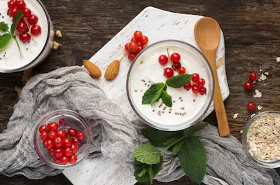

Probióticos vs Prebióticos: Qué Son y Dónde Encontrarlos
Definición y diferencias clave
Los probióticos son microorganismos vivos, principalmente bacterias beneficiosas, que al ingerirse en cantidades adecuadas mejoran el equilibrio de la microbiota intestinal. Estos se encuentran en alimentos fermentados y suplementos específicos. Su función principal es colonizar el intestino, desplazando a las bacterias patógenas y reforzando la barrera intestinal.
Por otro lado, los prebióticos son fibras vegetales no digeribles que actúan como alimento para las bacterias probióticas. A diferencia de los probióticos, no contienen organismos vivos, pero son esenciales para mantener un entorno favorable donde las bacterias beneficiosas puedan proliferar. Su consumo regular promueve la producción de ácidos grasos de cadena corta, clave para la salud digestiva.
Alimentos ricos en probióticos
Entre los alimentos más destacados se encuentra el yogur natural, que contiene cepas como Lactobacillus bulgaricus y Streptococcus thermophilus. Estos microorganismos ayudan a descomponer la lactosa y reducir la inflamación intestinal. Otros alimentos fermentados como el kéfir, el chucrut y el kimchi también aportan diversidad bacteriana, esencial para una microbiota equilibrada.
En el caso de los productos lácteos fermentados, es crucial elegir versiones sin pasteurizar o procesadas en frío, ya que el calor destruye las bacterias beneficiosas. Para quienes siguen dietas veganas, alternativas como el tempeh o la kombucha son excelentes fuentes de probióticos. La variedad en el consumo garantiza una mayor resiliencia frente a desequilibrios digestivos.
Fuentes naturales de prebióticos
Los prebióticos se hallan principalmente en vegetales, frutas y cereales integrales. El ajo y la cebolla son ricos en inulina, un tipo de fibra que estimula el crecimiento de Bifidobacterias, asociadas a la reducción de inflamación y la mejora de la absorción de minerales. Estos compuestos también están presentes en alcachofas, espárragos y plátanos verdes.
Además, la raíz de achicoria y la avena contienen fructooligosacáridos (FOS), que no solo nutren la microbiota, sino que también regulan el tránsito intestinal. Incorporar estos alimentos de forma gradual es clave para evitar gases o hinchazón, especialmente en personas con sensibilidad digestiva. La combinación con probióticos potencia sus efectos sinérgicamente.
Beneficios para la salud
El consumo equilibrado de probióticos y prebióticos fortalece el sistema inmunológico, ya que el 70% de las defensas se alojan en el intestino. Estudios demuestran que cepas como Lactobacillus rhamnosus reducen la incidencia de infecciones respiratorias y alergias. Además, ayudan a prevenir trastornos como el síndrome del intestino irritable (SII) y la diarrea asociada a antibióticos.
A nivel metabólico, estos compuestos mejoran la síntesis de vitaminas (como la B12 y la K2) y facilitan la digestión de nutrientes complejos. También se vinculan a una mejor salud mental, gracias a su papel en la producción de serotonina. Para obtener resultados óptimos, se recomienda integrarlos en la dieta diaria, priorizando alimentos naturales sobre suplementos, salvo en casos clínicos específicos.